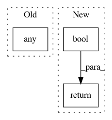

c177962572640832bcf14581db2a172f0ac7d700,geomstats/_backend/pytorch/__init__.py,,any,#Any#Any#,126
Before Change
def any(x, axis=None):
if axis is None and torch.is_tensor(x):
return x.bool().any()
numpy_result = _np.array(_np.any(_np.array(x), axis=axis))
return torch.from_numpy(numpy_result)
After Change
x = torch.tensor(x)
if axis is None:
return x.bool().any()
return torch.any(x.bool(), axis=axis)
//numpy_result = _np.array(_np.any(_np.array(x), axis=axis))
//return torch.from_numpy(numpy_result)
In pattern: SUPERPATTERN
Frequency: 3
Non-data size: 3
Instances
Project Name: geomstats/geomstats
Commit Name: c177962572640832bcf14581db2a172f0ac7d700
Time: 2020-04-23
Author: ninamio78@gmail.com
File Name: geomstats/_backend/pytorch/__init__.py
Class Name:
Method Name: any
Project Name: eth-cscs/reframe
Commit Name: f0be29988d637f2d40616e4f857648f87bc77451
Time: 2018-11-27
Author: manitaras@cscs.ch
File Name: reframe/core/schedulers/slurm.py
Class Name: SlurmNode
Method Name: is_down
Project Name: tensorflow/tensorboard
Commit Name: 21491193a9943e93c94a5bf85bf608d43585eb86
Time: 2019-07-17
Author: wchargin@gmail.com
File Name: tensorboard/plugins/text/text_plugin.py
Class Name: TextPlugin
Method Name: is_active